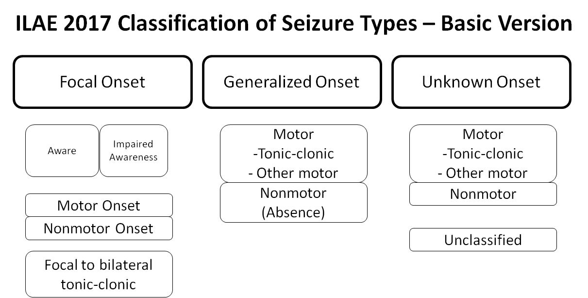

Qualquer súbito e transitório entra no diferencial
“Desmaio, confusão que volta, dormência que some, ‘voz’ intermitente — o que todos esses têm em comum no diferencial?”
1. Mantra: súbita e transitória
Regra de ouro: qualquer paciente, de qualquer faixa etária, com manifestações neurológicas súbitas e transitórias → epilepsia entra como hipótese. O conceito-âncora é exatamente esse: súbita + transitória.
2. Motor, sensitivo, sensorial, comportamental
Qualquer modalidade vale: motora, sensitiva, sensorial ou comportamental. Espectro: movimentos coordenados transitórios com retorno ao normal; dormência súbita com retorno; perda de consciência súbita com recuperação.
3. Recorrência e o diferencial aberto
Quando isso se repete, a hipótese de epilepsia se fortalece. O diferencial é amplo e cruza áreas — inclusive psiquiatria: paciente que de vez em quando “ouve vozes” pode estar com crise epiléptica sensorial. Confusão intermitente com retorno ao normal também coloca epilepsia no DDx. “Desmaio” pensado como síncope vasovagal ainda mantém epilepsia no diferencial.
Fixar: súbita + transitória + (recorrência) abre o leque da epilepsia.
Sem fechar a porta: a regra de ouro põe epilepsia no DDx, não fora do DDx.


Quiz · P2 2 perguntas · resposta com feedback
Q1. O melhor enunciado da regra de porta é:
Q2. “Ouvir vozes” intermitentes com retorno pleno: